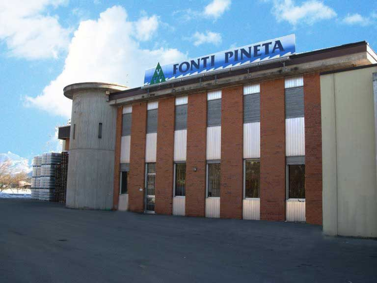
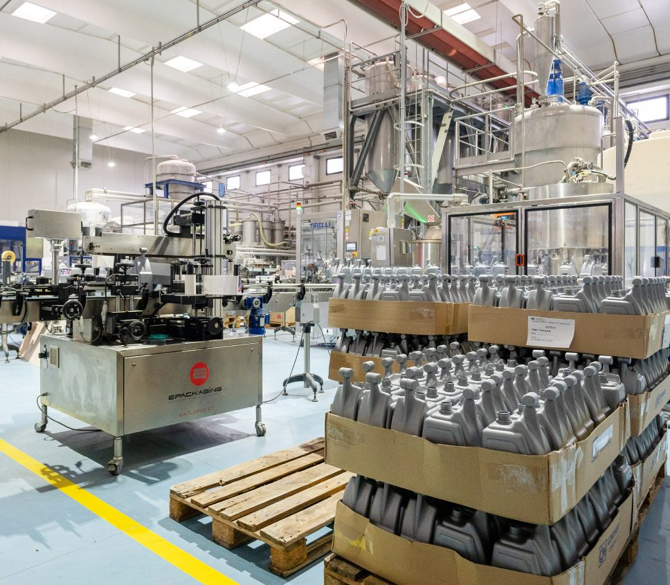

Portfolio · Esame di Stato
Gabriel’s Portfolio
Il racconto del mio percorso di studi all’indirizzo SIA: le esperienze di PCTO, il Project Work, il progetto di Educazione Civica e gli obiettivi che mi porteranno verso una laurea in Informatica.
Indice del portfolio
Sei sezioni che raccontano un percorso
Ogni tappa unisce la teoria scolastica all’esperienza diretta sul campo. Scegli da dove iniziare.
01
Chi sono
La persona dietro al percorso: interessi, crescita personale, sport e obiettivi futuri.
Vai alla sezione 02
02Project Work
Cybersecurity con l’app LV8: phishing, protezione dei dati e lavoro di squadra.
Vai alla sezione
03Visite aziendali
Fonti Pineta e Project for Building: produzione industriale ed economia circolare.
Vai alla sezione
04Esperienza PCTO
Lo stage in Nettuno Srl e i collegamenti con Diritto, Economia e Matematica.
Vai alla sezione05
Educazione civica
Barriere digitali e accessibilità web: un digitale che includa tutti.
Vai alla sezione06
Final Reflections
A mature reflection in English on growth, challenges and future goals.
Read the section2Visite aziendali
3Settimane di stage
3Materie collegate
1Progetto di cittadinanza
Dove sto andando
Il prossimo passo: l’Università
Il mio percorso non si ferma al diploma. Voglio proseguire gli studi nel campo che mi appassiona di più: l’informatica. Ho già sostenuto il test d’ingresso e guardo con entusiasmo al mondo dello sviluppo software.
Leggi i miei obiettivi- Laurea triennale in Informatica (L‑31)
- Meta preferita: Università di Milano‑Bicocca
- TOLC‑S già superato
- Obiettivo a lungo termine: sviluppo software e tecnologia